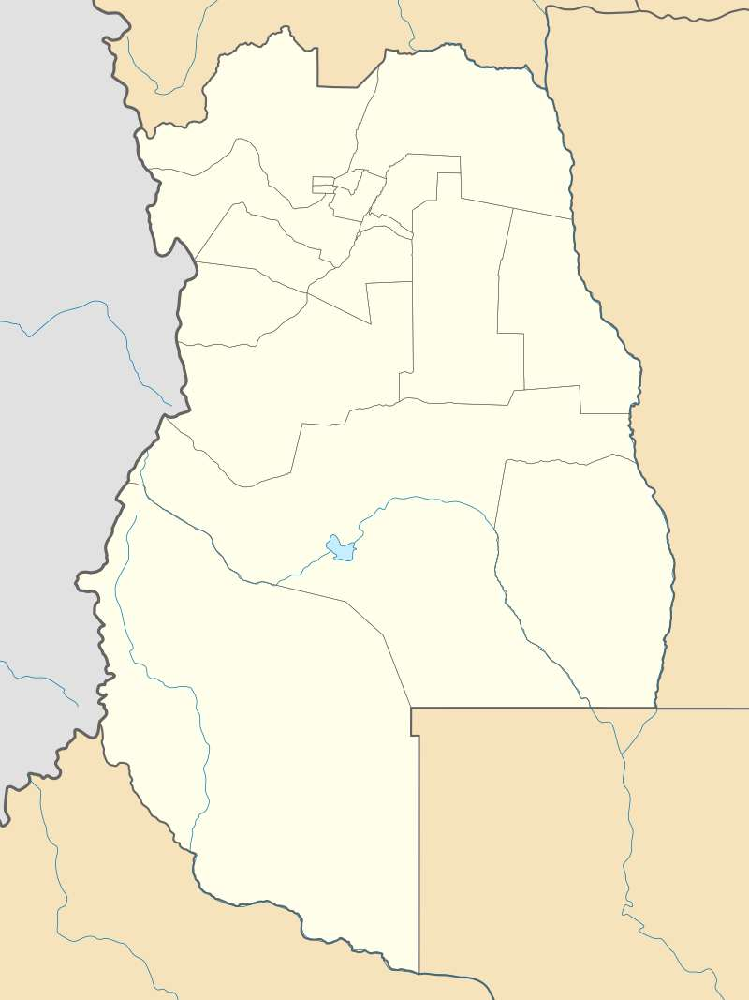
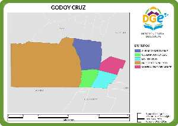

Department of Godoy Cruz
Godoy Cruz is a city located in the department of the same name, in the province of Mendoza, Argentina. It is located 1,100 km from Buenos Aires.
Strategic location
Godoy Cruz has its own personality and activities, as well as important residential neighborhoods, but it is strongly linked to the City of Mendoza in terms of trade and labor demand. It is part of one of the jurisdictions of what is called Greater Mendoza, which is made up of the departments of Capital, Guaymallén, Las Heras, Luján de Cuyo and Maipú.
Mendoza Urban Population
Godoy Cruz is the third most populous city in Mendoza. It has important tourist attractions, green spaces, a large number of representative buildings and icons, such as the Mendoza Casino, the Godoy Cruz Antonio Tomba Sports Club, the renowned Cine Teatro Plaza, the much-visited Palmares Open Mall, among others.
Image Gallery
One of the elements that characterize each department of Mendoza alike is its plaza. In the historic center of San Vicente - today Godoy Cruz - is located the departmental square

The Godoy Cruz Antonio Tomba Sports Club is a sports institution in the city of Greater Mendoza.

Palmares Open Mall is an open shopping center located in the department of Godoy Cruz opened in 1995. It has more than 155 stores, a supermarket, garages, cinemas, offices and a medical center.

The Centro Cultural Cine Teatro Plaza has a capacity for a thousand spectators, located on two levels. Not only theater, dance and music performances are held here, but also educational and social activities, such as collation acts, conferences, open classes, workshops, etc.

Of the 107.3 km2 of surface of the department, 36 km2 are occupied by the piedmont, a wide natural territory at the foot of the high mountains